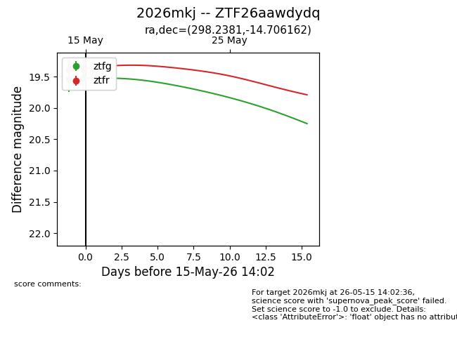
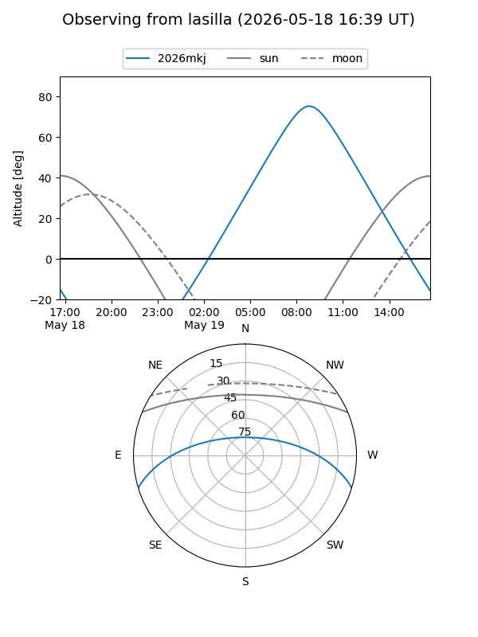
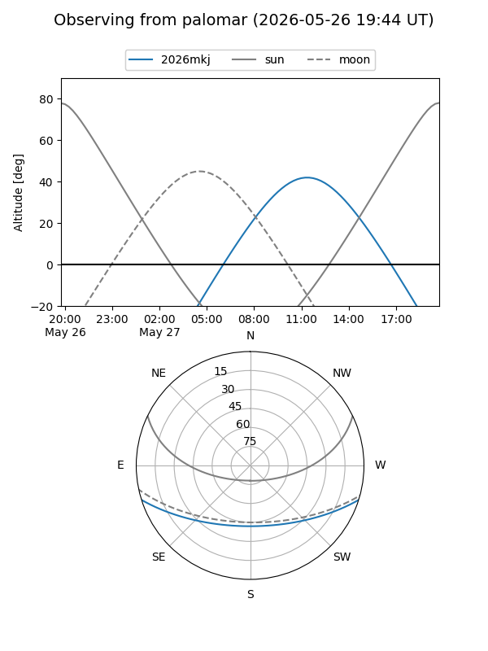
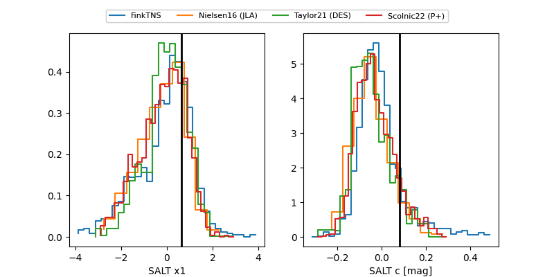

2026mkj
Target 2026mkj at 2026-05-15 14:04
Aliases and brokers:
FINK: link
Lasair: link
ALeRCE: link
TNS: link
YSE: link
alt names
ZTF26aawdydq (ztf,fink_ztf)
2026mkj (tns,yse)
Coordinates:
equatorial (ra, dec) = 298.2381,-14.70616
equatorial (HMS+DMS) = 19:52:57.14,-14:42:22.18
galactic (l, b) = (26.2674,-20.12359)
Flags:
Photometry:
last ztfg=19.53, ztfr=19.37
2 ztfg, 2 ztfr detections
Lightcurve

Visibility


Additional plots
